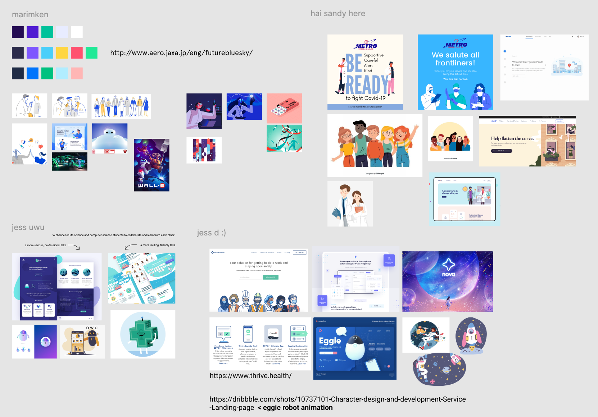
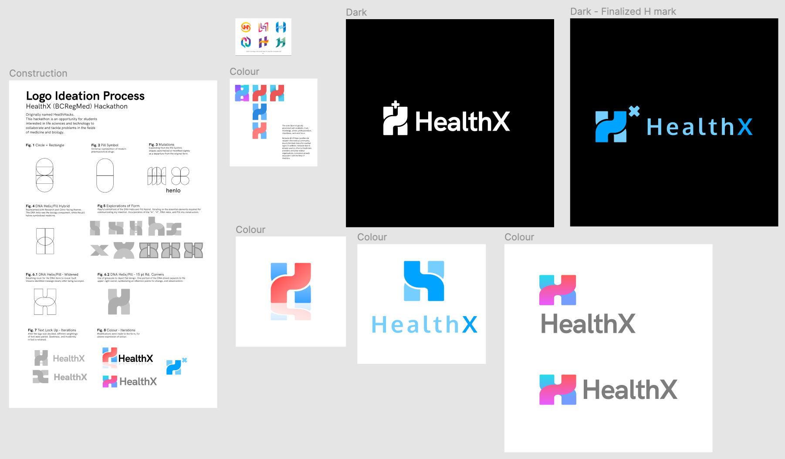

HealthX - nwPlus
A hackathon encouraging collaboration between students interested in health sciences and technology.

PROJECT DETAILS
Team: Tiffany Yap, Jessica Wu, Marisa Chan, Sandy Co, Philman Yeung, Adel Akbar, Jessica del Rosario
Role: UX/UI Designer
Product: HealthX web design (PDF) - implementation in progress
Timeframe: 2 months
Background
HealthX is a 24-hour hackathon organized by nwPlus, where students use technology in order to create innovative solutions to real world problems within research and medicine. We wanted to give students interested in life sciences and technology a chance to tackle problems in the medicine and biology field, and collaborate with one another.
Project Goal
We wanted to design a website that would inspire and encourage students interested in both health sciences and technology to collaborate with one another to build projects. We also wanted this website to portray our 2 main values: collaboration between streams, and exploring new limits.
Design process + My role
We followed the standard 5-step design thinking process, often validating wireframes with the development and logistics team before moving on to each next stage of design. At each stage, I also ensured to test the website for usability and accesibility, confirming that aspects like color contrast aligned with guidelines provied by the WCAG 2.0. As the design lead, I was the main point of contact when it came to organizing meetings with the external dev lead/logistics team, and was also responsible for defining/reviewing website content, implementation limitations, and more.
1. Moodboarding
As a design team of 6, we each created a moodboard to ideate about the design direction and theme we wanted to convey for this website. We collectively narrowed down aspects from each moodboard that we might want to include in our website, in order to ensure our team was on the same page when it came to deciding on a theme. This would also help us ideate designs for branding and free merchandise we'd like to give to hackers (e.g. stickers, t-shirts, lanyards).

2. Wireframing
We started out with sketching wireframes by hand to determine our website layout and IA. Sketching by hand allowed us to iterate freely based on feedback from developers and other team members, before moving onto vectorized grayscale designs. We were able to fine-tune the structure of our website to ensure we had a strong foundation before adding illustrations and color. We ended up choosing a single page layout with anchor points for each top-navigation menu item to maintain consistency with the other nwPlus sites which currently apply the same structure.
3. Grayscale designs
We created mid-fidelity designs without color at first, so that we could focus on website content and user flow before adding color and detailed illustrations.
4. Colored designs + branding
In this step we were able to apply color, illustrations, and branding aspects such as our logo and mascot. This is where our moodboarding really took effect in guiding our brand, which we wanted to be seen as fun and inviting, yet also centered around healthcare. I also constantly checked for color contrast to ensure that our website would be accessible to everyone, including those with visual impairments. A few iterations of our logo can be seen below.

5. Animations
To add a more dynamic feel to our website and capture the users’ attention, I created small animations such as molecules floating in the background, and the robot floating within the screen. I learned to use tools such as Adobe After Effects and Lottie for the first time, and also gained more experience in creating animations with developers.
Final product
Unfortunately due to COVID-19, development for this hackathon website has been postponed until a later date when we can confirm that HealthX will be able to run either in person or virtually. Fortunately, the full design is still available to view here: HealthX web design (PDF).
Challenges + What I learned from them
This was my first experience as a design lead, and so my biggest challenge was figuring out how to create an organized yet collaborative workflow with an interdisciplinary team. Especially with everyone having their own ideas for the project, as HealthX was a new event with no previous references for branding, I wanted to ensure everyone’s contributions were valued while still being able to define the design direction. I learned how to hear out the entire team’s input and organize a way that we could collaborate while still portraying a consistent theme throughout the design.
This was also my first time working with Adobe After Effects and Lottie animations, providing an opportunity to learn a lot about motion design, and what can be done by the design team to make animations easier to implement for the development team.